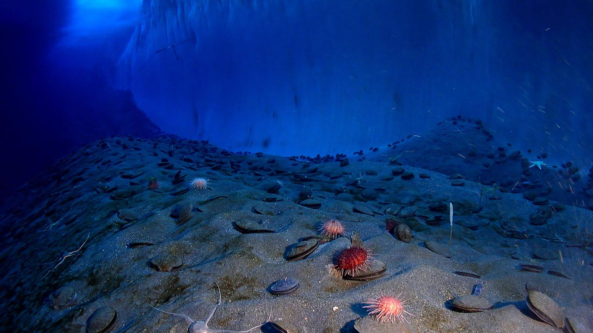

Us ice dragons can survive in any condition or environment. We don't need air to survive. When I was young, I accidentally fell into a volcano, and I was totally fine. In the sea, we live in underwater ice caverns that we made. We also sometimes make homes on unhabited land where humans cannot harm us. As I mentioned in the Species section, us ice dragons can chamoflauge into our environments. If we are next to a volcano, we will turn red, but we almost never go to the Island of Volcanoes, so we are usually blue or white.
